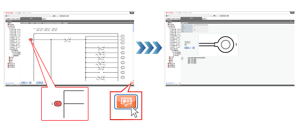

查看手册
电路图
概述
电路图包含下列类别，各类别中包含相关项目。
从树状目录中选择要查看的项目并显示电路图或系统电路图。 在电路图、列表和系统电路图中，可通过树状目标查看相关零件。
电路图画面的说明
| 1 |
重置
|
| 2 |
缩小框
缩小插图尺寸。 |
| 3 |
显示缩放比率指示符
显示缩放比。
|
| 4 |
放大
放大插图尺寸。 |
| 5 |
简洁显示
仅显示所选零件的电路图。
有关详情，请参考执行简洁显示。
提示
- 如果浏览器版本为 6.0/8.0，则不显示该按钮。
|
| 6 |
撤销简洁显示
撤销简洁显示并显示整体电路图。
提示
- 如果浏览器版本为 6.0/8.0，则不显示该按钮。
|
| 7 |
取消简洁显示
取消简洁显示。 |
| 8 |
状态显示
显示画面更新状态。 |
| 9 |
安装位置图
显示当前继电器盒或接线盒的安装位置图。 |
| 10 |
接线盒和继电器盒图
显示当前显示的内部电路图对应的接线盒和继电器盒图。 |
| 11 |
内部电路图
显示当前继电器盒或接线盒的安装位置图。 |
| 12 |
连接器和其他详情
显示与在系统电路图、安装图或内部电路图中所选零件相关的连接器的详细信息。 |
系统电路图
系统电路图包含电源电路图、接地点电路图和系统电路图。可用电路图检查连接器、线束、保险丝、继电器等的位置及系统线路。
显示系统电路图中的连接器和其他详情
 |
选择零件或导线并点击连接器和其他详情。
将显示所选零件或连接至导线零件的连接器和其他详情。
|
执行简洁显示
在简洁显示下，选择多条导线或零件并切换至简洁显示（仅显示这些导线间的连接器）。
|
在系统电路图中选择零件或导线并点击简洁显示按钮。
导线闪烁显示且零件闪烁显示（红色）。
如果选择一条导线，其两端的零件交替闪烁。
|
保险丝列表
可用保险丝列表检查保险丝名称和电容。并可检查电源及其供电系统。
显示保险丝列表的接线盒和继电器盒图
|
点击保险丝列表中接线盒和继电器盒或点击熔断丝盒名称按钮。
显示接线盒和继电器盒图。
|
显示保险丝列表的系统电路图
连接器和其他详情
可用连接器和其他详情画面检查如零件、连接至各连接器的连接器号及零件号信息。可显示有关连接器的线路图和系统电路图等。
维修线束画面的说明
点击维修线束可显示维修线束相关信息。
| 1 |
端子类型 |
| 2 |
识别插头式和插座式端子 |
| 3 |
端子类型和零件号 |
| 4 |
套筒形式和零件号 |
| 5 |
连接器外壳截面图 |
可切换与所选端子相关的线路图和系统电路图显示列表。
可显示所有端子或仅与所选端子相关的线路图和系统电路图的项目。
显示所有端子的线路图和系统电路图列表。
|
选择所有端子并点击切换显示。
显示与所有端子相关的所有线路图和系统电路图。
|
仅显示所选端子的线路图和系统电路图列表。
|
点击连接器图上的连接器号。
点击的连接器号显示为红色。
|
|
选择所选端子并点击切换显示。
显示与所选连接器号相关的所有线路图和系统电路图。
|
显示连接器和其他详情的线路图（线路图或接线盒和继电器盒图）
提示
- 如果显示连接器或接地点信息，则显示电路图。如果显示继电器或保险丝信息，则显示接线盒和继电器盒图。
显示连接器和其他详情中的系统电路图
线路图
可用线路图检查连接器的安装位置、接地点和连接器号及车辆所有零件所用的线束。
显示线路图的导线名称列表
|
点击导线名称。
显示导线名称列表。
|
显示线路图中的连接器和其他详情
|
选择连接器号并点击连接器和其他详情按钮。
显示连接器和其他详情。
|
接线盒和继电器盒图
可用接线盒和继电器盒图检查连接器、继电器和连接至接线盒和继电器盒的保险丝的位置及其他详情信息。
显示接线盒和继电器盒的安装位置图
显示接线盒和继电器盒的内部电路图
显示接线盒和继电器盒图的连接器和其他详情
|
选择连接器号并点击连接器和其他详情按钮。
显示连接器和其他详情。
 |
内部电路图
可用内部电路图检查接线盒和继电器盒的内部电路。
显示内部电路图的安装位置
显示内部电路图的接线盒和继电器盒图
显示内部电路图的连接器和其他详情
|
选择连接器号并点击连接器和其他详情按钮。
显示连接器和其他详情。
 |
安装位置图
可用安装位置图检查车辆继电器、继电器盒、接线盒，熔断丝、计算机等的安装位置。
显示安装位置图的接线盒和继电器盒图
|
选择一个零件名称并点击接线盒和继电器盒按钮。
显示接线盒和继电器盒图。
 |
显示安装位置图的内部电路图